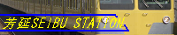

|
駅 員 事 務 室
ここでは、当サイト案内や注意事項、管理人紹介等を取り扱っております。
■ はじめに
今日も芳延SEIBU STATIONをご利用くださいましてありがとうございます。
当サイトでは主に西武鉄道の池袋線系統を中心に秩父鉄道や地域情報、Ａ列車５ゲームをもとにした架鉄などを扱っている駅（サイト）です。
まだまだ未熟な点が多々ありますが、どうぞごゆっくりとお過ごし下さい♪
■ 注意事項とリンクについて
当サイトの画像等の著作権はすべて管理人にありますので無断転載はおやめ下さい。
なお、西武鉄道や秩父鉄道ほか企業にはまったく関係はありませんので当サイトに関する、企業への問い合わせはご遠慮下さい。
なお当サイトのリンクはフリーですがもし設置して頂けたらメール宛に一言伝えて頂けるとうれしいです。またリンクを張る際には下のバナーをご利用下さい。なおくれぐれも直リンは絶対におやめ下さい。
なお設置場所は自由ですがなるべく誰でもわかりやすい場所への設置をお願いします。
相互リンクにつきましてはＨＮ、ＨＰアドレス、連絡先のメルアドとＨＰの一言紹介文を添えてメールで駅長宛に送るか、ゲストブック（掲示板）に書き込んで下さい。
管理人が審査した上で受付させていただきます。
■ サイト案内
サイト案内です。
駅員事務室：ここのサイトです。
１番線：西武線＆秩父鉄道写真館→西武線と秩父鉄道の全形式と、東京メトロ有楽町線10000系の現役車両のデータを公開中です！
２番線：西武＆秩鉄：紹介→西武池袋線系統と秩父鉄道の駅、種別停車駅紹介と秩父車両公園を公開中です。
３番線：西武線の最近のニュース・話題→管理人の最近の話題、地元ネタ撮影記、ミニ旅行記などを扱っています。
４番線：西武＆秩父鉄道ギャラリー→西武線の写真やＴＯＰ画像履歴を公開しています。
駅長室：駅長日記（ブログ）とゲストブック(掲示板）があります。
乗換口：リンクです。
■ プロフィール
管理人へのご意見、ご感想などはメールへお願いします。
駅長のプロフィールはこちらからどうぞ。
前回のプロフィールより大幅にアップしました。
■ バナー
バナーです。ご自由にお持ち帰り下さい。

戻る
トップに戻る
|
|
COPYRIGHT (C) YOSHINOBU SEIBU STATION ALL RIGHTS RESERVED. Designd by YUMOTO
|
|